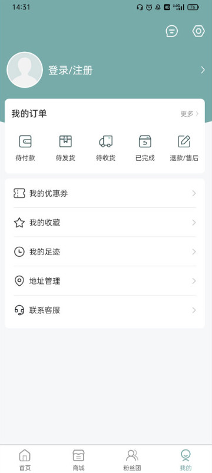

用 KMS 买韩专一年了，这笔追星账算明白没？
从专辑预购到签名会抽选，拆解 KMS 作为韩流音像购物渠道的真实成本：手续费、等待期、抽选概率，三类使用强度分别算账，告诉你值不值继续在这上面花钱。
它到底值不值得掏钱？
这是我用 KMS（KMStation Mall）下了十几单、蹲了三次签名会抽选之后，最想掰扯清楚的一个问题。KMS 本身是免费的，从官方下载拿到的安装包才 40MB，Android 5.2 就能跑，下载注册一分钱不花——但你装它的目的就是花钱，买专辑、抽签名、冲特典卡，每一笔都是真金白银。所以真正的问题不是"要不要为 App 付费"，而是：把钱放在 KMS 这个渠道上花，值不值？
先把定价拆明白：它到底从你口袋里掏了什么
KMS 不搞订阅制、不搞会员费，也没有应用内广告——这一点必须先夸，你上它的官网也看不到任何付费门槛的说明。但不代表它不赚钱，它的模式是渠道抽佣 + 活动溢价，成本藏在每一张专辑、每一次抽选里。
具体拆开看：
- 专辑本身：跟韩国本地门店价格基本持平，甚至因为批量拿货能拿到一点折扣，你在 App 里看到的标价已经是"含平台费用"的最终价，不会在结算时突然多出一笔服务费——这是好的地方，透明。
- 运费：跨境物流从几周到几个月不等，价格随重量浮动，但平台不赚运费差价，按实际物流成本实收——这一点文档里没明说，但对比过几次国际快递报价基本对得上。
- 签名会抽选：这是最容易被忽略的一笔。你买的不是"签名权"，是"抽选资格"——同一专辑买多份可以提高中签概率，但每份都按原价算，没有多买优惠。换句话说，如果你为了提高中签率买了三张专辑，那其中两张本质上是在给抽选概率付费，这钱花得值不值，完全看你对"签名"这件事有多执念。
- 特典卡：官方活动赠送的特典卡本身不额外收费，但有些限量版专辑会比普通版贵出一截，差价的一部分就是"特典成本"。
总结一下 KMS 的付费逻辑：它不靠 App 赚钱，靠你在上面买的东西赚钱，而且赚的是"便利费"和"活动参与权溢价"。你在别的渠道可能能买到更便宜的裸专，但 KMS 能让你在一个 App 里搞定购买、抽选、物流追踪，还能蹲到中国线下签名会的招募入口——这部分便利就是它收的"隐形成本"。

分三类人算账：你是哪一种
我把 KMS 的用户大致分成三类，各自算一笔账，对号入座看看你属于哪边。
轻度用户：偶尔买一张专辑当收藏
这类人一年买个一两张，凑个热闹，不追签名、不冲特典。对他们来说，KMS 的成本就是专辑标价本身，跟找代购的差价其实不大——代购要加 10%~20% 的代购费，KMS 虽然没折扣但省去了跟代购沟通的时间，也不用担心代购跑路或发错货。
算账：假设一张专辑 150 块，代购价 170~180，KMS 卖 155（含运费）——每单省 15~25 块，还省心。轻度用的话，KMS 是赚的。
唯一需要注意的是发货时效：全款预售可能等两三个月才发货，现货也得等跨境物流一两周。如果你买了想当礼物送朋友，提前算好时间，不然等专辑到了朋友生日都过了。
主力用户：每月都有购买计划
这类人每个月蹲回归、追打歌、新专必买，还会关注签名会招募。这时候 KMS 的便利优势就出来了——你可以设预售提醒、看库存状态、蹲签名会横幅，一个 App 搞定所有环节，不用同时刷三四个代购群。
但成本控制就变得重要了。这里有几个我自己总结的省钱思路：
- 现货优先：标注"极速发货"的现货通常比预售贵一点但等得快，预售便宜但要等发行周期。不急的话蹲预售，差价能差出一顿奶茶钱。
- 平台团凑量：有些粉丝团会发起团购，起订量达标后平台会给折扣（kms文档里提到平台团是"成团后开始计算"），加入粉丝团一起拼单能省 5%~10%。
- 抽选冷静：别为了提高中签率无脑加购。我见过有人为了一个签名会一次性买了七张专辑，最后没中，亏的钱快赶上一张演唱会门票了。设个预算线，比如"抽选花费不超过专辑原价的两倍"，过了就停手。
主力用户的时间成本才是大头——KMS 帮你省下来的比价、筛选、跟代购沟通的时间，折算成时薪的话，其实比那点代购费值钱多了。

重度用户：签售会常客、应援物资组织者
这类人一年花好几万在上面，组织粉丝团、批量采购应援物、蹲所有能蹲的签名会。对他们来说 KMS 已经不是"一个购物 App"，而是整个追星供应链的入口。
成本账在这里不太适用——重度用户在乎的不是省几块钱，而是能不能拿到货、能不能抢到名额、有没有渠道优先权。KMS 在这方面的优势是：
- 签名会招募入口比代购渠道早（官方视频签名会招募分类页直接挂出），有第一手信息；
- 批量下单的账号稳定性比新号好，不会因为风控被砍单；
- 客服响应速度比普通用户快（可能跟账号消费等级有关）。
但重度用户要警惕抽选焦虑：KMS 的抽选机制本质是概率游戏，买得多不等于必得。我身边有个朋友连续三次签售会花了近万，一次没中，最后心态崩了半脱坑。把抽选当成娱乐消费而不是投资，亏了不心疼，中了是惊喜——这才是正确姿势。
替代方案：不用 KMS 有什么别的路
觉得 KMS 不够划算？还有三条路可以考虑，但每条都有代价：
第一条：直接找韩国代购。最便宜的选项，代购费 5%~15%，有时候甚至免代购费只算运费。但缺点是沟通成本高——语言问题、时区差异、代购口碑参差不齐。我曾经找过一个代购，专辑在仓库压了一个月没发货，追了七次才给寄。而且代购一般不接签名会抽选，嫌麻烦。
第二条：韩国直邮。自己上韩国购物网站下单，找国际物流转运。价格确实是最低的，但门槛也是最高的——需要懂韩文、有韩国支付方式、会操作转运地址，适合有经验的老玩家，但对大多数粉丝来说不现实。
第三条：国内二手市场。闲鱼、小红书上有人转卖拆专、特典卡，有时候能以原价甚至更低的价格收到。但风险是假货、品相差异、以及买不到当季新品（人家早就抢完了）。适合补旧专、收老特典，不适合追新。
三条路对比下来，KMS 其实是中间路线：价格比代购贵一点，但比直邮省心；选项比二手市场全，但比官方渠道慢。它赚的是那点"介于专业粉丝和小白之间"的便利费。
结论：三类人分别怎么选
算完这笔账，给个能直接执行的结论：
- 轻度用户：闭眼下。一年买个一两张，KMS 比代购省心、比直邮便宜，没理由不装。
- 主力用户：继续用但设预算。每月规划好"追星预算"，抽选别超支，预售能蹲就蹲——KMS 省下来的时间比多花的那点钱值。
- 重度用户：KMS 是刚需，但一定要警惕抽选陷阱。把抽选当成"娱乐消费"而非"投资"，设好止损线。
最后说句实在的——追星这件事本身就是花钱买情绪价值，没有"值不值"只有"够不够喜欢"。但如果你花之前能先算清楚：这笔钱换来了什么、有没有更便宜的替代品、多花的那点钱值不值省下来的时间——那至少不会在收到账单时拍大腿后悔。
哦对了，KMS 的多语言支持做得还行，首页左上角能切中文，但专辑的原始信息（版本名、发行方文案）还是韩文——看不懂的话截图翻译一下就行，不算什么大问题。